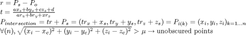

NBV_beta2
Description: Goes through all_views variable previously calculated and checks which poses are now safe, then goes through these views and removes point already calculated if their are new planes obstructing
Contents
- Function Call
- Variables
- Remove points that are beyond osticle points
- Go through each obstacle where the home point is within the scan
- If points on other side of this plane, ray trace, check if intersec<mew
- update the expected info and update best views
- Check if any bestviews were found, if so order them
- try and get at least 1 path then save the remaing valid_max-1
Function Call
Inputs: NULL
Returns: NULL
function NBV_beta2()
Variables
clear the plots and global bestviews variable
clear global bestviews; global workspace Q all_views bestviews optimise scan; %%%%%%%%%saving for the exhastive search try load Xsearchdata.mat; Xsearchdata(end+1).workspace=workspace; catch; Xsearchdata(1).workspace=workspace; end save('Xsearchdata.mat','Xsearchdata'); %%%%%%%%end saving file %since we are no longer loading with exGUi we put it here to load if it %hasn't already been/ or created if it dosen't exist if isempty(all_views) try load all_views.mat catch display('Having to calculate all_views for exploration, this happens ones only'); calc_all_views(); load all_views.mat end end tic indexed_knowncoords=round(setdiff(workspace.knowncoords(GetImpLevInfo(workspace.knowncoords),:),workspace.indexedobsticles,'rows')/workspace.inc_size); %this makes the check for a collision quicker obsticle_points=workspace.indexedobsticles(GetImpLevInfo(workspace.indexedobsticles),:); all_possible=round(workspace.unknowncoords(workspace.lev1unknown ,:)/workspace.inc_size); [nothing,index]=setdiff(all_possible,[indexed_knowncoords;obsticle_points],'rows'); unknown_points=workspace.unknowncoords(workspace.lev1unknown(index),:); all_known=[workspace.knowncoords;workspace.indexedobsticles]; unknownweight=calunknownweight(); % find valid configs pos_validconfigs=find(all_views.result==-1); %recheck the said to be valid configs for cur_con=pos_validconfigs' [obstacle_result,unknown_result]=check_path_for_col(all_views.newQ(cur_con,:),obsticle_points,unknown_points); if ~obstacle_result all_views.result(cur_con)=0; elseif ~unknown_result %we are in unknown space all_views.result(cur_con)=-1; else all_views.result(cur_con)=1; end end if size(scan.done_bestviews_orfailed,1)>0 [nothing,nolongervalid]=intersect(all_views.newQ,scan.done_bestviews_orfailed,'rows'); %set the result to 0 since we have already done it or it has failed somewhere all_views.result(nolongervalid)=0; scan.done_bestviews_orfailed=[inf,inf,inf,inf,inf,inf]; end %delete all unneeded ones from memory all_views=remove_all_views_result0(all_views); [nothing,scanoriginOKindex]=intersect(all_views.scanorigin,workspace.knowncoords(GetImpLevInfo(workspace.knowncoords),:),'rows'); %update the valid config var validconfigs=intersect(find(all_views.result==1),scanoriginOKindex); bestviews(size(validconfigs,1)).tr=zeros(4); bestviews(size(validconfigs,1)).chosenview=zeros([1,3]); bestviews(size(validconfigs,1)).scanorigin=zeros([1,3]); bestviews(size(validconfigs,1)).Q=zeros([1,6]); bestviews(size(validconfigs,1)).expectedaddinfo=[]; bestviews(size(validconfigs,1)).addinfo=0; bestviews(size(validconfigs,1)).all_views_val=0; BVcount=1; for cur_con=validconfigs' points=all_views.expectedaddinfo(cur_con).vals;
Remove points that are beyond osticle points
%obstructing planes plane_homepnts=[workspace.indexedobsticles_home_point]; %equations of planes plane_equ=[workspace.indexedobsticles_equ]; %if any are the same then probably there is some obstruction by the planes plane_index=(1:size(plane_homepnts,1))'; % remove points which are obscured by surfaces %scanorigin % o------------- % \ Known % \ 0\ obsticle % \XX\ unknown since behind obsticle % \XXX\ % firstly remove all points that we either know are free or have an obstacle if size(all_known,1)<size(workspace.unknowncoords,1) points=setdiff(points,all_known,'rows'); else points=intersect(points,workspace.unknowncoords,'rows'); end
Go through each obstacle where the home point is within the scan

% showld be the same as the surfaces made when we get obsticle points mew=workspace.mew; current_scan_origin=all_views.scanorigin(cur_con,:); for i=plane_index' %what side are the points on of this plane? points_sign=(plane_equ(i,1)*points(:,1)+... plane_equ(i,2)*points(:,2)+... plane_equ(i,3)*points(:,3)+... ones([size(points,1),1])*plane_equ(i,4))>0; %what side is the scan.origin on? scan_origin_sign=(plane_equ(i,1)*current_scan_origin(1)+... plane_equ(i,2)*current_scan_origin(2)+... plane_equ(i,3)*current_scan_origin(3)+... plane_equ(i,4))>0; %All point on the same side are automatically valid %Now look at point on the opisite side of the plane points_on_oposite_side=points(points_sign~=scan_origin_sign,:);
If points on other side of this plane, ray trace, check if intersec<mew

if size(points_on_oposite_side,1)>0 %we get the r variables for the parametric forms of a line between 2 points r_var=[current_scan_origin(1)-points_on_oposite_side(:,1),... current_scan_origin(2)-points_on_oposite_side(:,2),... current_scan_origin(3)-points_on_oposite_side(:,3)]; %find intersection point between surface and the scan line between scan origin and point bottomof_t_var=plane_equ(i,1)*r_var(:,1)+... plane_equ(i,2)*r_var(:,2)+... plane_equ(i,3)*r_var(:,3); %make sure it is not 0 otherwise change it so it is simply a very small number (epsilon) so we can keep the size of matrixes if ~isempty(find(bottomof_t_var==0, 1)); bottomof_t_var(bottomof_t_var==0)=eps; end t_var=( plane_equ(i,1)*current_scan_origin(1)+... plane_equ(i,2)*current_scan_origin(2)+... plane_equ(i,3)*current_scan_origin(3)+... plane_equ(i,4)... )./ bottomof_t_var; % Get the intersection points intersectionPNTs=[t_var.*-r_var(:,1)+current_scan_origin(1),... t_var.*-r_var(:,2)+current_scan_origin(2),... t_var.*-r_var(:,3)+current_scan_origin(3)]; %find the points which are either on the same side of the plane as the scanning point %or they are on the other side and are less than mew fmro the intersection point points=[points(points_sign==scan_origin_sign,:);... points_on_oposite_side((sqrt((intersectionPNTs(:,1)-plane_homepnts(i,1)).^2+... (intersectionPNTs(:,2)-plane_homepnts(i,2)).^2+... (intersectionPNTs(:,3)-plane_homepnts(i,3)).^2)>mew),:)]; %it is possible that all points have been removed so we can break %out and say no points are give (if surface is right in front) if size(points,1)==0 break end end end
update the expected info and update best views
all_views.expectedaddinfo(cur_con).vals=points;
bestviews(BVcount).tr=squeeze(all_views.tr(cur_con,:,:));
bestviews(BVcount).chosenview=sum(bestviews(BVcount).tr(1:3,1:3));
bestviews(BVcount).scanorigin=bestviews(BVcount).tr(1:3,4)*workspace.inc_size;
bestviews(BVcount).Q=all_views.newQ(cur_con,:);
bestviews(BVcount).expectedaddinfo=all_views.expectedaddinfo(cur_con).vals;
bestviews(BVcount).addinfo=getweighted_addinfo(bestviews(BVcount).expectedaddinfo)/unknownweight;
bestviews(BVcount).all_views_val=cur_con;
BVcount=BVcount+1;
end
Check if any bestviews were found, if so order them
if isempty(bestviews) error('There were no bestviews found, probably because there are no known points to go too'); end %order the best views order_bestviews()
try and get at least 1 path then save the remaing valid_max-1
valid_count=0; % this limits the amount of time we can spend searching for a path when % there may not be one valid_max=min(2*optimise.valid_max,size(bestviews,2)); for current_view=1:valid_max if valid_count<1 %if a path calculated previously exists from current place use it if all_views.path(bestviews(current_view).all_views_val).valid==1 &&... isempty(find(all_views.path(bestviews(current_view).all_views_val).all_steps(1,:)-Q>eps,1)) % check to make sure if check_path_for_col(all_views.path(bestviews(current_view).all_views_val).all_steps,obsticle_points) bestviews(current_view).valid=1; bestviews(current_view).all_steps=all_views.path(bestviews(current_view).all_views_val).all_steps; else %find a new path all_views.path(cur_con).valid=0; [bestviews(current_view).valid,bestviews(current_view).all_steps]=pathplanner_new(bestviews(current_view).Q,false,true,true,30); end else %otherwise try and get another [bestviews(current_view).valid,bestviews(current_view).all_steps]=pathplanner_new(bestviews(current_view).Q,false,true,true,30); end else %once we have one path then we just fill the rest in with pre cal or blanks if all_views.path(bestviews(current_view).all_views_val).valid==1 &&... isempty(find(all_views.path(bestviews(current_view).all_views_val).all_steps(1,:)-Q>eps,1)) if check_path_for_col(all_views.path(bestviews(current_view).all_views_val).all_steps,obsticle_points) bestviews(current_view).valid=1; bestviews(current_view).all_steps=all_views.path(bestviews(current_view).all_views_val).all_steps; else %set global var all_path valid to 0 and set dummy values for all_views.path(cur_con).valid=0; bestviews(current_view).valid=-1; bestviews(current_view).all_steps=[]; end else bestviews(current_view).valid=-1; bestviews(current_view).all_steps=[]; end end if bestviews(current_view).valid || valid_count>=1 valid_count=valid_count+1; tempbestviews(valid_count)=bestviews(current_view); %we have enough (optimise.valid_max) if valid_count>=optimise.valid_max break; end else %it failed so note down that we can't get to this destination all_views.path(bestviews(current_view).all_views_val).valid=0; end end %set to the new sorted and pathplanned tempbestviews if valid_count==0 error('There were no bestviews found, probably because there were no possible paths to any of the desired ones, consider changing end_value_damper_weight'); else bestviews=tempbestviews; end toc